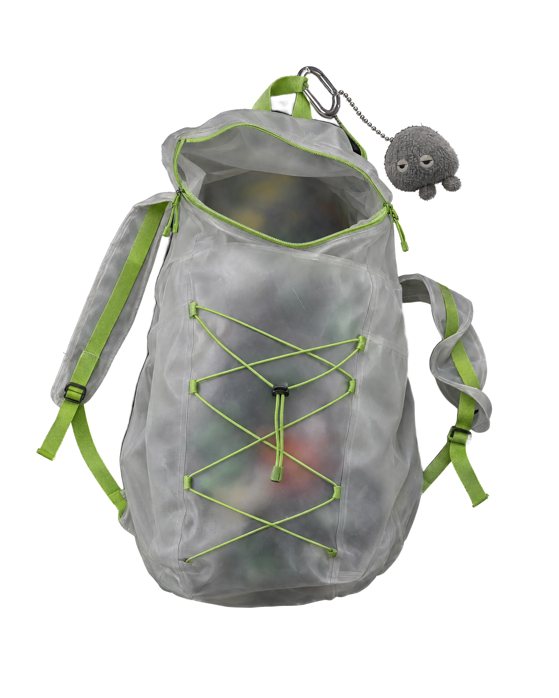

AI 图像与视觉设计
提示词设计、文生图与图生图、参考图控制，完成角色、场景与道具资产，并统一画风、色调和细节。
Nano Banana / ChatGPT / ComfyUI / Midjourney / 即梦Photoshop / Illustrator

把灵感、设计与影像装进背包。
三个入口，认识我的不同侧面。
拖入三个物件，展开作品集。

把想法写进脚本，
让故事走进画面。
拥有 5 年视频后期与内容创作经验，作品涵盖品牌广告、电商种草、短剧、短片与互动影游。
从剪辑、调色与声音设计出发，逐步转向 AIGC 内容创作，负责剧本拆解、分镜设计及角色与场景资产制作，把创意从脚本推进到成片。
围绕脚本、分镜与视觉资产组织制作，结合 AI 生成和后期剪辑，控制角色一致性、镜头连续性与成片节奏。
提示词设计、文生图与图生图、参考图控制，完成角色、场景与道具资产，并统一画风、色调和细节。
Nano Banana / ChatGPT / ComfyUI / Midjourney / 即梦文生视频、图生视频、首尾帧与运镜控制，处理角色一致性与场景连续性，让分镜衔接成故事。
可灵 / LibTV / 即梦素材筛选、节奏剪辑、字幕、调色与音画合成，结合配音、配乐与音效完成成片交付。
Premiere Pro / 剪映 / Suno创意策划、脚本拆解、分镜设计、素材归档与版本管理；具备英语六级基础，可进行英文交流、阅读与写作。
脚本规划 / 视觉资产管理 / 英文沟通下一件作品，正在发生。